Building systems that let robots sense, decide, and act.
Electrical & Computer Engineering student with a Robotics minor at UT Austin. This is a running log of what I've built: mechanical, electrical, and everything soldered or scripted in between.
Projects
06 / 06Robotathon — Team Gordon Ratzky
First-semester build: a ping-pong-ball collection robot with a rubber-band roller intake inspired by tennis ball hoppers. Won Best Mechanical Design.
ASCEND — A-150
Built the brake-control "muscles and nerves" for an autonomous emergency-response paraglider drone. GoAERO Prize Stage 1 winner, NASA-recognized.
FRI 1 — Instruction Clarity
What FRI is, how the Robot Learning stream works, and a Spring 2025 paper on instruction clarity in a generalist robot policy.
FRI 2 — SawyerRoll
The second semester's mechanical and RL project under Professor Xu, and how it led directly to the Memory Research invitation.
Memory Research
Solo research invited by Professor Junhong Xu: dynamic goal injection for interactive long-horizon manipulation in ManiSkill-HAB.
Connect 4 — Embedded Systems
A full-system embedded build on a TI LaunchPad: LCD graphics, sampled sound, interrupts, and a bilingual UI, engineered from scratch.
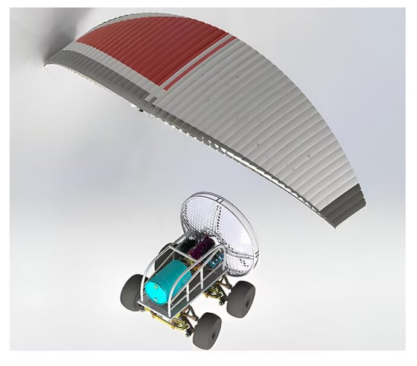
ASCEND — A-150
Building the brake-control "muscles and nerves" for an autonomous emergency-response paraglider drone.
The challenge
ASCEND, short for Aerial Solutions for Combatting Emergencies and Natural Disasters, is competing in the GoAERO Prize, a $2M+, three-year global competition backed by NASA, Boeing, RTX, and Honeywell, aimed at building the world's first autonomy-enabled, portable Emergency Response Flyer. The vehicle has to be uncrewed, roadable enough for a first responder to drive it to a disaster site, and capable of vertical takeoff and landing from terrain that regular vehicles can't reach: sand, slopes, wet ground, tight spaces.
The competition runs in three stages: a technical-paper "paper stage," a building phase requiring a working subscale or full-scale flyer, and a Final Fly-Off in February 2027 where surviving teams fly real emergency-response missions judged on Productivity (ferrying 700+ lb of cumulative payload), Adversity (takeoff/landing cycles from rough terrain), and Maneuvering (a slalom/obstacle course with spot landings), all built around a standardized 165cm, 120lb test payload nicknamed "Alex."
ASCEND's entry, the A-150, is a paramotor drone: a wheeled, ATV-style chassis flown under a steerable parafoil wing, designed to perform heavy-lift, long-range cargo operations cheaply from unimproved terrain. Out of more than 1,400 innovators from 85 countries, ASCEND was selected as one of just 22 Stage 1 winning teams worldwide, and separately recognized with a US University Innovation Award, with support from NASA. The team is based at UT Austin under faculty advisor Christian Claudel.
Who we are
ASCEND is a group of undergrads working together with a team of faculty advisors to build an autonomous flying ATV for emergency response.
Empower our members by providing opportunities to enhance their technical skills and create impactful products that make a positive difference in people's lives.
Developing an easy-to-manufacture, affordable prototype that excels in every standard of maneuvering and deploying, to establish a presence in the emergency response world and change lives.
My role
I'm an Electrical Engineer within the Electrical Team. Over the 2025–2026 school year, I built both halves of the paraglider's brake-control system: the actuators that physically pull the brake lines, and the sensors that measure what those lines are actually doing in real time. Together, these are the muscles and the nerves that let the aircraft control its own parafoil during flight, with no human pilot.
Both systems started from inherited hardware that didn't work at all (no wiring, no documentation, no working code) and ended the year as working, tested, documented systems.
System 1: The actuator system (the "muscles")
Starting point (Fall 2025): a prior capstone team left behind an Orca-6-48V linear actuator that wasn't wired to power or control electronics, an unconnected battery harness, and a single spec/setup PDF. No working code, no documentation.
I brought it back from nothing, in order: connected the batteries and USB serial so the actuator software could even recognize the hardware, then hit an unresponsive actuator and isolated the fault by elimination. I swapped computers first to rule out software, narrowed it to a voltage issue, and traced that to poorly soldered wire connections. Desoldered, recoiled, resoldered, and heat-pressed the joints for safety.
This elimination-based method (rule out the biggest, easiest variable first, then narrow down systematically) became my default approach for the rest of the year, on both systems.
From there: read through the inherited code function by function since it was poorly commented and couldn't run both actuators simultaneously, then built my own wiring schematic that actually matched what the code expected, rather than trusting either the code or the existing wiring on its own. Resolved illegible, unlabeled load-cell GPIO pins empirically, through trial rather than guesswork. Found that one actuator only registered movement in one direction, which caused it to max out, and dug into the Orca SDK and documentation to understand the root cause.
January 2026: after winter break, one actuator lost proper voltage again, the same symptom as the fall issue. Rather than assuming it was the same solder problem, I treated it as a potentially different root cause. It turned out to be a blown fuse, not a wiring fault.
Instead of just fixing it and moving on, I installed inline test switches so voltage can be measured before it ever reaches the actuators. That means any future recurrence of this symptom is a seconds-long diagnosis instead of an hours-long one. That's the difference between repairing a system and engineering it to stay repairable.
With the hardware solid, I wrote the actual control software using the Orca SDK:
- Synchronized dual-motor control, not lockstep, since the left and right brake lines sometimes need to move in opposite directions to steer
- A hand-tuned PID position controller
- Manual homing and software travel limits
- Retry logic on motion triggers, with fail-safe auto-park/shutdown on quit or crash
- A separate interactive jog/calibration tool with variable step sizes, used to empirically find the actuators' true mechanical limits with a safety buffer built in
By April 2026, the result was a fully working, verified, closed-loop dual-actuator system: built from wiring that didn't exist and code that didn't run, to a system that reliably commands both brake lines with software safety limits.
System 2: The load cell system (the "nerves")
Once the actuators worked, the next problem was obvious: they can move to a commanded position, but they have no idea what the wing is actually doing. A parafoil has no rigid frame. It's held in shape entirely by air pressure. If a cell loses pressure, that section collapses, and the aircraft can lose lift asymmetrically or enter an unstable descent, fast. The only way to catch that in time is to sense it through brake-line tension, the same way a human paraglider pilot feels it through their hands.
Hardware chain: two 500kg PSD-S1 S-type load cells → AD620 instrumentation amplifier modules → ADS1256 24-bit ADC → Raspberry Pi 5 over SPI (lgpio library). I took a soldering course specifically to hand-build the amplifier circuits myself, and designed the full wiring diagram from scratch, again starting from an undocumented base.
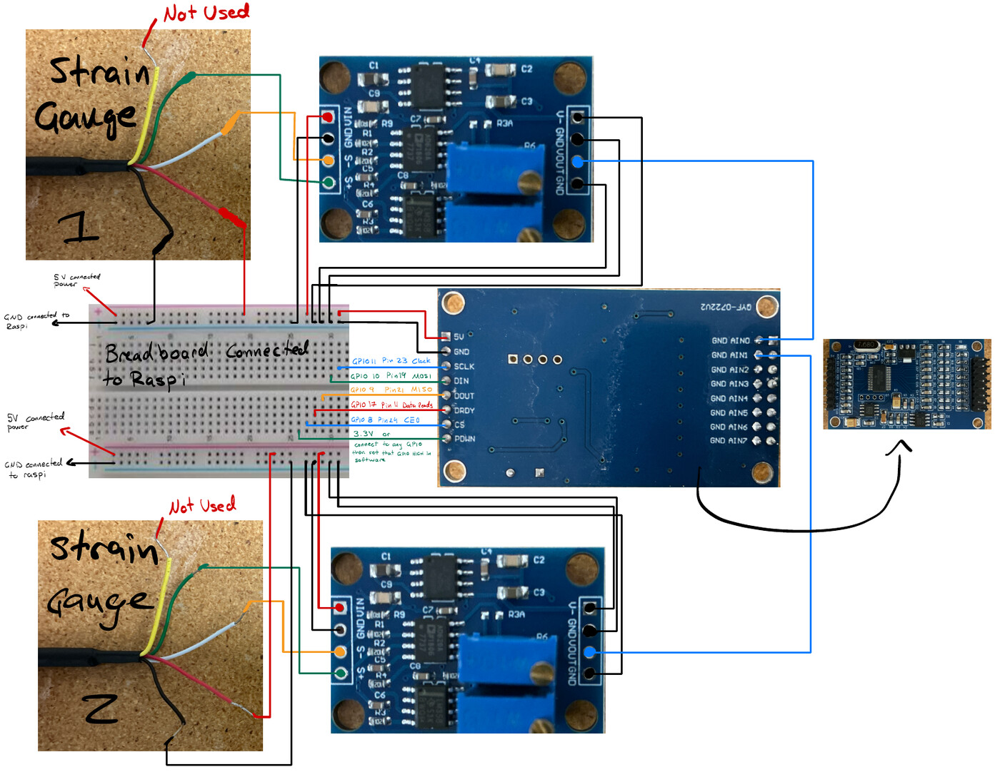
The full signal chain, diagrammed from scratch: two strain gauges → AD620 amplifiers → ADS1256 ADC → Raspberry Pi 5, with GPIO pin mapping for the SPI connection.
The AD620's V- pin was actively outputting -5V, generated internally by a 7660 charge pump, and that pin must never be connected to ground. Before I isolated this, it was destabilizing every reading on the board. It's a genuinely subtle analog catch: the kind of thing that only surfaces from tracing a circuit pin-by-pin rather than assuming datasheet-typical wiring.
I also worked out the shielding approach for the load cell's cable: shield grounded at one end only, twisted with the signal return at the AD620 input, validated against a public overlanding project ("Tuck's Truck") using the same load cell and a similar amplifier setup.
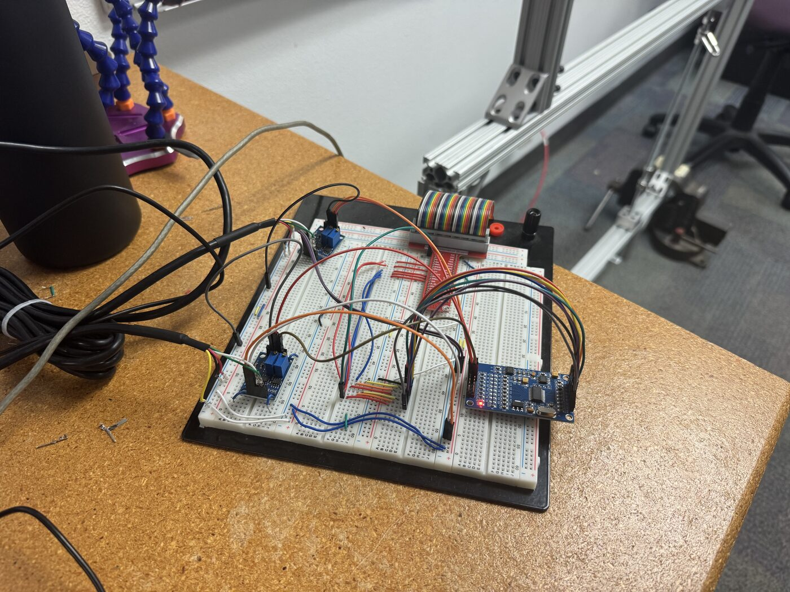
The signal chain built out on a breadboard: both AD620 amplifier modules, the ADS1256 ADC, and the SPI connection back to the Pi.
Software built from scratch for this system:
- A live monitoring tool with delta and status indicators
- An interactive calibration wizard that saves to JSON and generates usage code
- A 10Hz CSV data logger
- Supporting diagnostic and gain/offset optimization scripts
Where it stands: after gain tuning, the system reached acceptable stability: about 1.2% variation at a ~3M count baseline. A 500kg load cell can't be meaningfully validated with hand pressure alone (that's only 1–4% of full scale, right at the noise floor), so the next step is testing with 50+ kg known weights before running the full calibration workflow.
Why it matters
The two systems are complementary, not two separate projects. The actuator system is the actuation half: it can move the brake lines to any commanded position, precisely and safely. The load cell system is the sensing half: it's what lets a flight controller know whether those commanded movements are actually working, and catch the earliest signs of a wing collapse before it fully develops. Without the sensor system, the actuators are flying blind. Without the actuator system, the sensors have nothing to inform.
Build progress
The chassis coming together over the year, from a bare frame to a fully wired platform with the machine-vision mount and propeller cage installed.
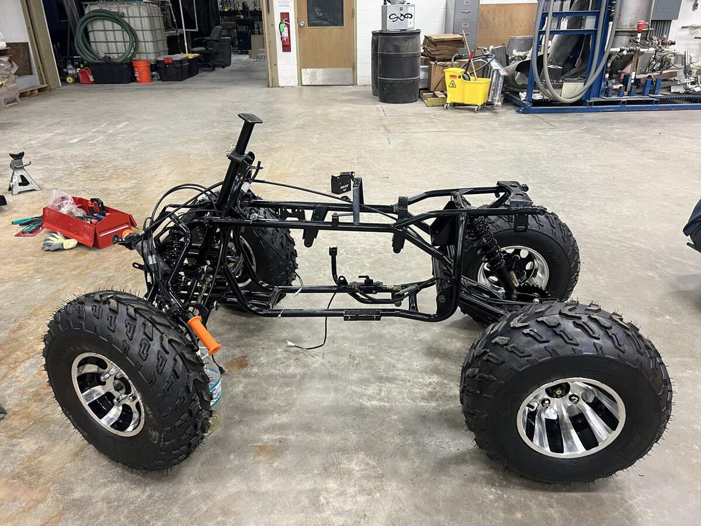
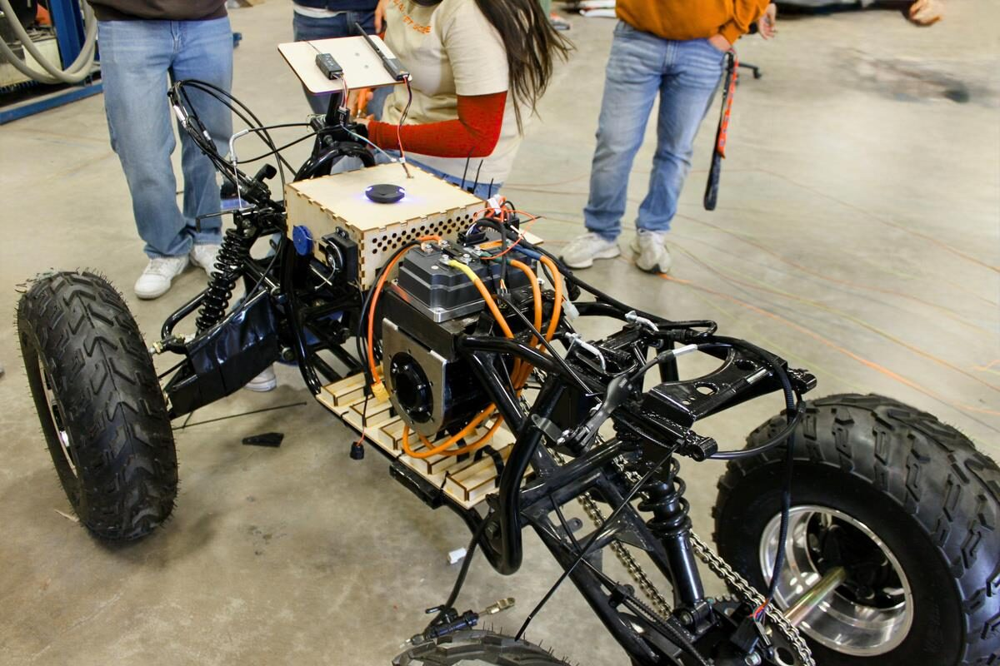
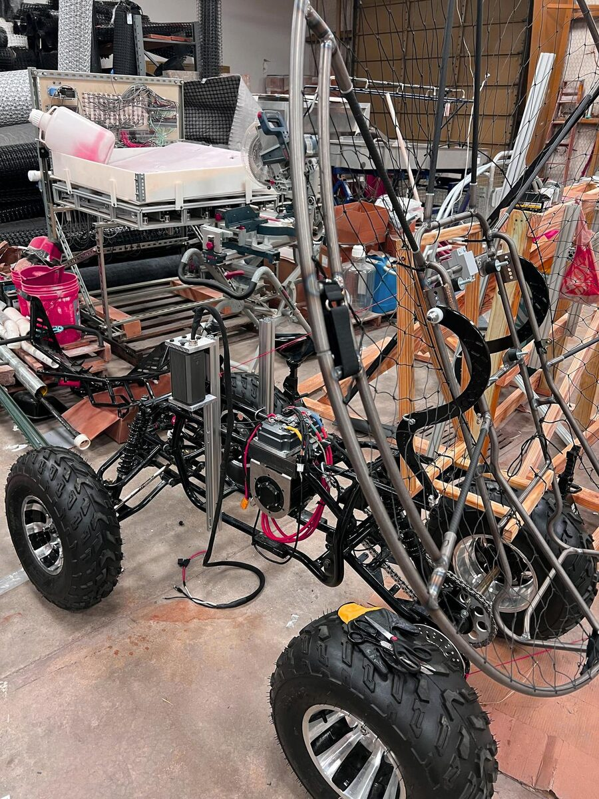
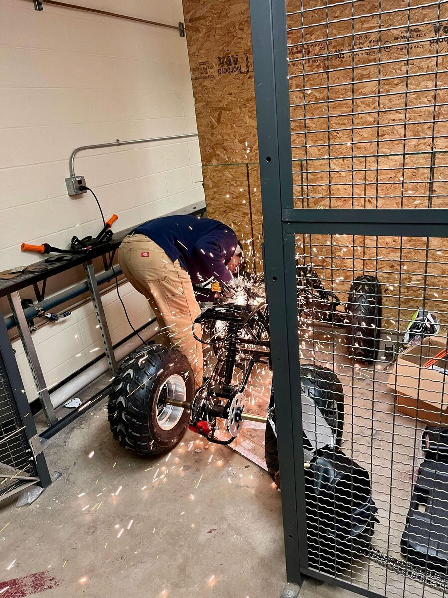
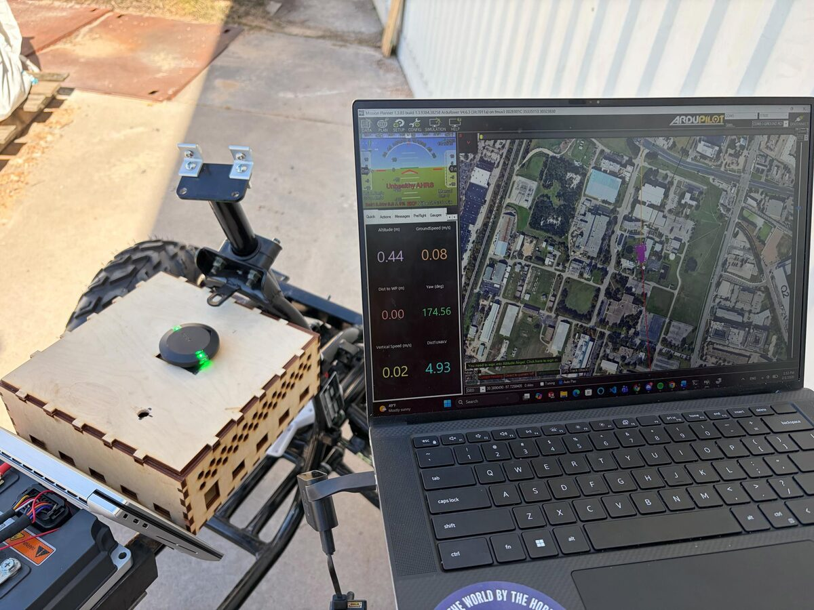
Left: welding the propeller cage frame. Right: ground-control telemetry, showing GPS position, heading, and speed, running live next to the machine vision mount.
Field testing
Ground tests to validate the chassis and drivetrain, plus a wing-inflation test to check the parafoil deploys and holds shape correctly before attempting a tethered or free flight.
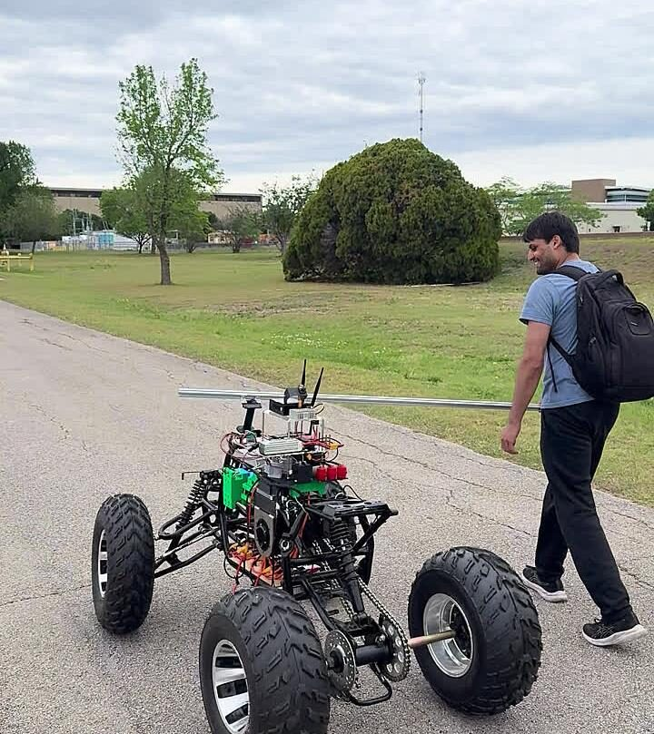
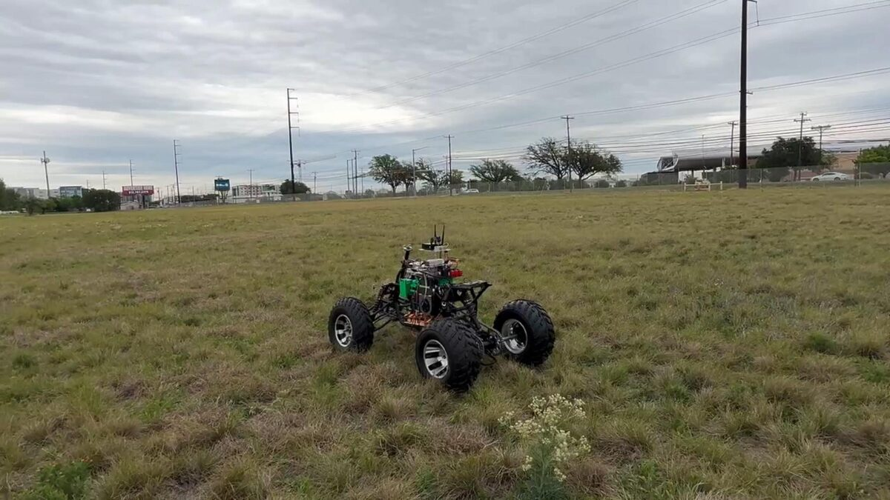
Ground tests on UT Austin campus, checking drivetrain response and stability before adding the wing.
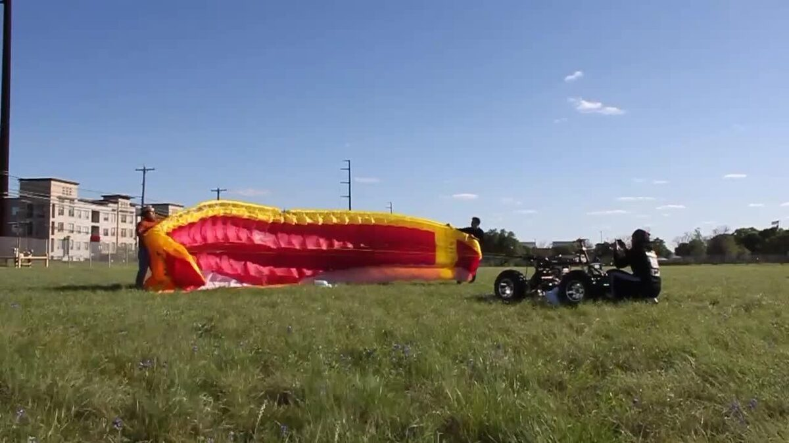
Wing-inflation test: the parafoil laid out and inflated ahead of the chassis, checking it holds shape correctly.
Roadmap
GoAERO's Stage 3 requires a demonstrated flying prototype by November/December, constrained by FAA authorization. The team's timeline is built backward from the Final Fly-Off at NASA Ames in February 2027:
Immediate next steps (Summer 2026): continued machine-vision data collection, finishing linear actuator implementation, a new battery installation, structural work on the frame, remote control of braking and steering, and more field tests. Beyond the competition itself, the team is also exploring applications for the platform outside of emergency response.
Team
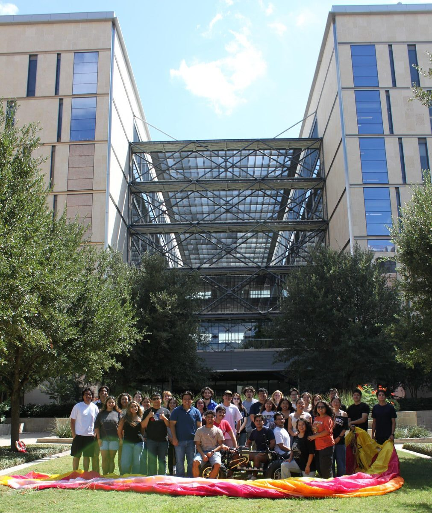
The ASCEND team, with the A-150 chassis and parafoil wing laid out for a field test.
Faculty Advisor: Christian Claudel
FRI 1 — Instruction Clarity
A semester studying why robot policies misunderstand human language, and building a layer that fixes it before the robot ever sees the instruction.
The program
The Freshman Research Initiative (FRI) gives first-year students at UT Austin the chance to do real research inside a faculty lab instead of waiting until upper-level years. It's competitive. I applied and was accepted into the Robot Learning stream, which runs inside the RobIn Lab (Robot Interactive Intelligence Lab), directed by Professor Roberto Martín-Martín. I used the lab's space and equipment and worked within its research direction, though day-to-day I worked under the stream's instructors rather than directly with Professor Martín-Martín himself.
The stream changed hands between my two semesters: Spring 2025 was taught by Dr. Ben Abbatematteo, and Fall 2025 was taken over by Professor Junhong Xu.
Spring 2025 — Does instruction clarity affect a robot policy?
Robot policies are increasingly controlled through natural language: you type or say what you want, and the robot does it. The problem is that human language is often vague in ways people don't notice: "grab that and put it over there" is completely clear in context to another human, and completely useless to a policy with no shared context. Together with teammates Daniel Milan and Cougar Seale, I set out to actually measure how much that vagueness hurts task performance, and whether it could be fixed automatically.
We evaluated Physical Intelligence's π0 ("Pi-Zero"), a pretrained, general-purpose vision-language-action policy, on pick-and-place tasks from the LIBERO-Object benchmark. To be clear about scope: we didn't build π0 itself, we used it as our test subject, and built the evaluation framework and correction layer around it.
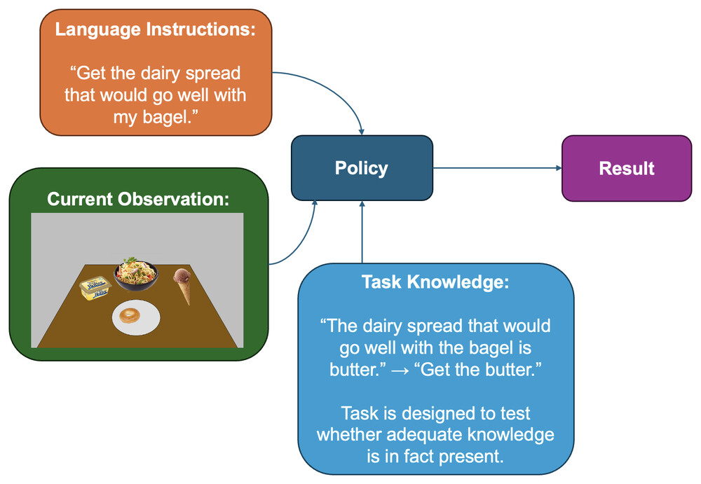
Fig. 1 from the paper. It shows the basic input given to the policy: a language instruction plus the current observation, producing a result.
We defined two original metrics to make instruction clarity something we could actually test against, rather than eyeball:
Ambiguity score (σ): how much of the information critical to the task is actually present in the instruction, explicitly or implicitly. "Pick the black bowl between the plate and the ramekin" scores 1.0. "Serve the bowl thing in the middle of the table" scores 0.33.
Relevance score (η): how much of the instruction is actually necessary versus just noise. "Pick the black bowl on the cookies box and place it on the plate" scores 1.0. Add "which I bought at the grocery store yesterday" and it drops to 0.67.
ntotal = pieces of information critical to the task; n = pieces stated explicitly, m = pieces implied (e.g. via synonym). ctotal = total clauses in the instruction; ccrit = minimum clauses needed to unambiguously specify the task.
We ran π0 on four target items (alphabet soup, cream cheese, orange juice, ketchup) across instructions at varying σ and η values, and measured task success rate at each level.
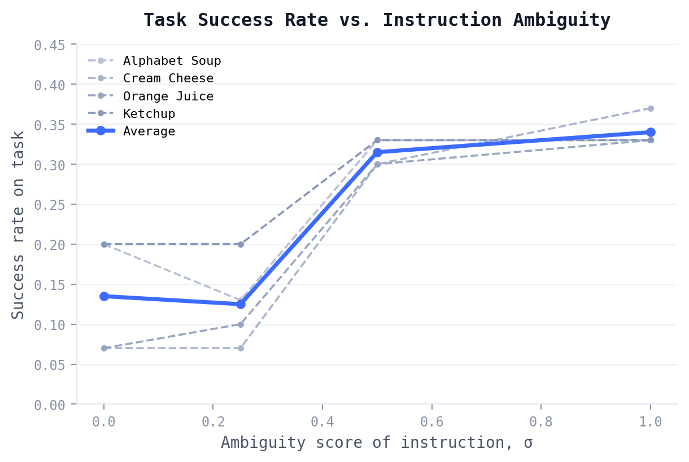
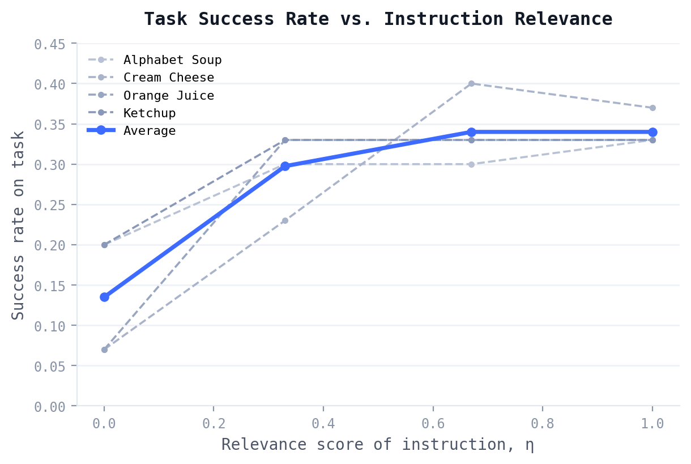
Both metrics show the same pattern: performance is roughly flat near the top, then drops sharply below a threshold: around σ = 0.5 for ambiguity, and a more lenient η = 0.25 for relevance.
| Task (Target Item) | σ = 0.00 | σ = 0.25 | σ = 0.50 | σ = 1.00 |
|---|---|---|---|---|
| 1 (Alphabet Soup) | 0.20 | 0.13 | 0.33 | 0.33 |
| 2 (Cream Cheese) | 0.07 | 0.07 | 0.30 | 0.37 |
| 3 (Orange Juice) | 0.07 | 0.10 | 0.30 | 0.33 |
| 4 (Ketchup) | 0.20 | 0.20 | 0.33 | 0.33 |
| Task (Target Item) | η = 0.00 | η = 0.33 | η = 0.67 | η = 1.00 |
|---|---|---|---|---|
| 1 (Alphabet Soup) | 0.20 | 0.30 | 0.30 | 0.33 |
| 2 (Cream Cheese) | 0.07 | 0.23 | 0.40 | 0.37 |
| 3 (Orange Juice) | 0.07 | 0.33 | 0.33 | 0.33 |
| 4 (Ketchup) | 0.20 | 0.33 | 0.33 | 0.33 |
The likely explanation: π0 mostly matches the exact name of the target item rather than reasoning about its form or function. That's why instructions using synonyms (lower σ) hurt performance more than instructions with extra irrelevant clauses (lower η), since the target item stayed named either way. Worth noting honestly: even at perfect clarity, the best success rate we measured was under 40%. That points to π0 having its own limitations on custom instructions, possibly from overfitting to where target objects typically sit in LIBERO's training scenarios, separate from the clarity question itself.
Fixing it: an LLM in the loop
Since LIBERO-Object's tasks all reduce to one template, "Pick the [item] and place it in the basket," we tested whether an LLM could sit between the user and the policy, rewriting messy instructions into that clean form before π0 ever saw them. We used Google's Gemini 2.0 Flash via its API, giving it the raw instruction plus the list of possible target items.
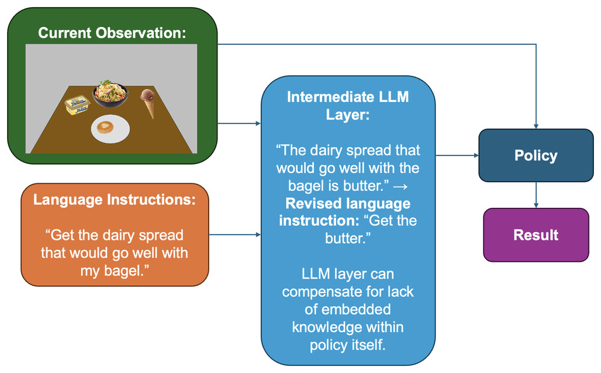
Fig. 2 from the paper. The corrected pipeline: the LLM intercepts the raw instruction, cross-references it against the current observation, and hands the policy a clean, unambiguous instruction instead.
It worked essentially perfectly: Gemini correctly identified the intended item in every single trial, across every ambiguity and relevance level we tested. The only exception was the fully-degenerate case (σ = η = 0), where no real information was present at all, and it correctly output "none of the above."
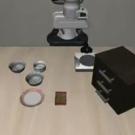
The LIBERO-Object simulation environment: the robot arm, table, and objects used across every test case.
Wrong benchmark, first try. We originally planned to run this on LIBERO-Spatial, not LIBERO-Object. π0 rarely engaged with our custom instructions there at all, which we believe was overfitting to LIBERO-Spatial's standard test cases. LIBERO-Object's task structure made it much easier to construct genuinely ambiguous instructions, so we switched, though π0 still showed some of the same resistance there too.
Instruction leakage. π0 would sometimes ignore our custom instructions and act on an old one instead, or refuse to follow the new one at all. We never fully confirmed the cause. It was possibly overfitting to the LIBERO test environments, possibly some internal state we couldn't see.
Shared infrastructure. π0 ran on a lab server shared with other FRI groups also using it. When they were running their own tests, we simply couldn't run ours. Scheduling around that was its own logistical constraint on the project.
This was an even three-way split across the team, and my focus was on the experimental side: running the actual test trials in the LIBERO-Object simulation, logging success rates for each instruction condition, and reviewing the recorded trial video for every run to judge, case by case, whether the policy had actually completed the task. That trial-by-trial scoring is what the results in Tables I and II above are built from. The code (the LLM disambiguation script and the task-file modification tooling) is also included below since I wrote it as part of the project, but the paper's data collection itself was hands-on, one trial at a time. All model code is directly from, or lightly modified from, Physical Intelligence's public openpi repository.
Team: Daniel Milan, Cougar Seale, and Rafael Torres, under Dr. Ben Abbatematteo.
FRI 2 — SawyerRoll
The second semester of the Robot Learning stream, under Professor Junhong Xu.
Fall 2025 — SawyerRoll
For the second semester, under Professor Junhong Xu when he took over the Robot Learning stream, I worked with teammates Cougar Seale and Anikait Gupta on SawyerRoll: a system for getting a Sawyer robot arm to roll a ball to a target area. Rolling is a strange gap in robotics manipulation research. There's a lot of work on pick-and-place and on throwing, but rolling sits in between them mechanically (continuous contact like pushing, but direction- and release-sensitive like throwing), and it's comparatively unexplored. I took on the majority of the technical build across the project: the mechanical design, both simulation environments, the demonstration collection, and training and evaluating all three policies. That's reflected in the level of detail below.
The mechanical design
Sawyer's default gripper is a two-prong design, and controlling those prongs mid-roll (timing the release, tracking prong pressure) would have added a lot of complexity that had nothing to do with the actual research question. So instead of using it, I designed a custom, standardized end-effector. The idea: if every robot arm in a future benchmark used the same custom tool instead of its own default gripper, the benchmark itself would be arm-agnostic.
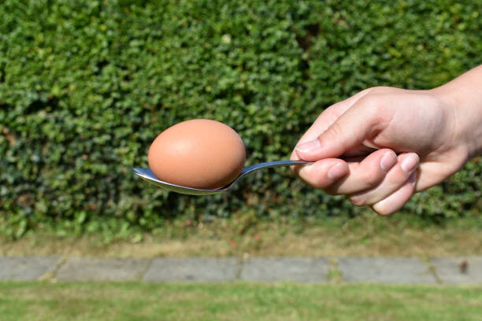
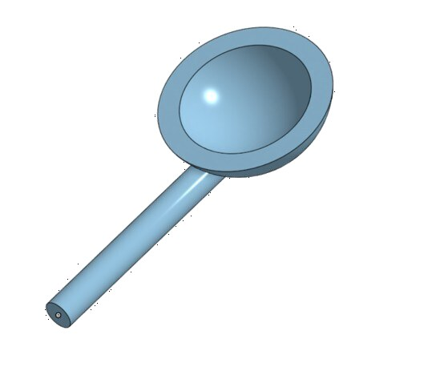
The design reference was literally a spoon carrying an egg: a shape that holds the ball securely but still lets it rotate and roll off cleanly. I modeled the final version in Onshape.
The first pass wasn't curved enough. The ball would roll off under any real speed or sudden direction change, both of which are central to the task. I increased the cup's curvature to fix that. Then a second, more technical problem showed up once I tried to bring the design into the simulator: MuJoCo's collision system only supports convex shapes, and my cup was concave. I had to decompose the design into convex pieces to make it physically simulable.
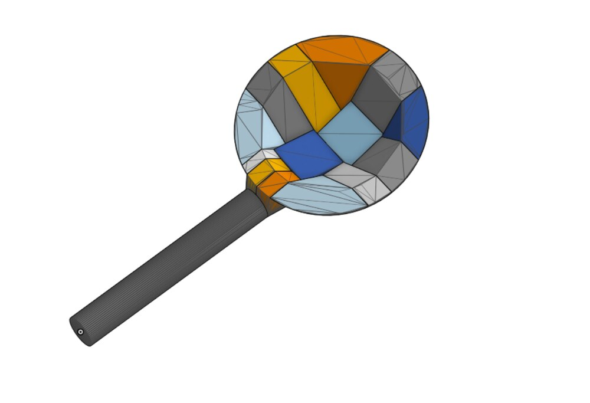
The final end-effector, decomposed into 15 convex parts so MuJoCo could actually compute collisions against it.
The simulation environment
I built this in Robosuite, on top of the MuJoCo physics engine. The deciding factor was contact accuracy. Rolling depends entirely on friction and contact dynamics in a way that pick-and-place or throwing tasks don't need to model at all, so the physics engine mattered a lot more here than it usually does.
The first working environment placed a Sawyer arm and ball in Robosuite's default arena, ball held between the stock gripper's prongs. The second, more developed version dropped the default gripper entirely (my first successful attempt at modifying the Sawyer arm's own XML file) and moved to a clean arm-plus-table-plus-ball setup, which is what I built the custom end-effector integration on top of.
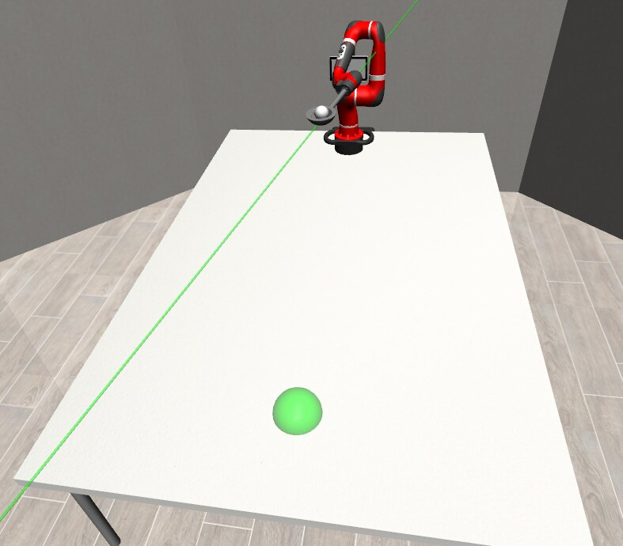
The final environment: Sawyer arm, ball, table, and a marked target area for the ball to roll into.
Data collection
I collected demonstrations by teleoperating the arm directly with the keyboard, using Robosuite's built-in teleoperation tooling. To keep the task focused purely on the rolling behavior itself (not also on grasping), the ball started pre-placed in the end-effector for every demo. Getting the physics parameters right took real trial and error. Every early demo just rolled the ball straight off the table:
A trial counted as successful if the ball stayed inside the target area for at least 5 seconds, a threshold I picked specifically because MuJoCo's contact physics for a rolling ball are never perfectly stable, so requiring the ball to sit dead still wasn't realistic. I also wrote a reward function to score every trial:
r = −1 if ‖e − t‖ < 0.3
r = 1/(1+d) − (v/10)·𝔾(d < ra) otherwise
where d is the ball's distance to target, v is its velocity, e is the end-effector position, t is the target position, and ra is the target radius, balancing proximity to target against how fast the ball is still moving.
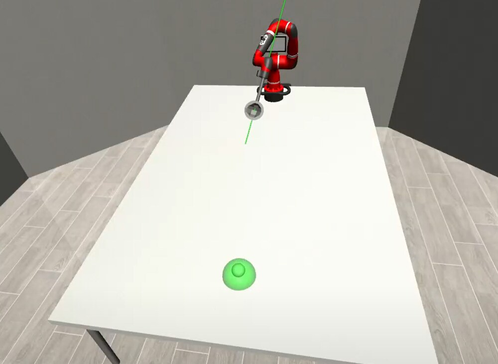
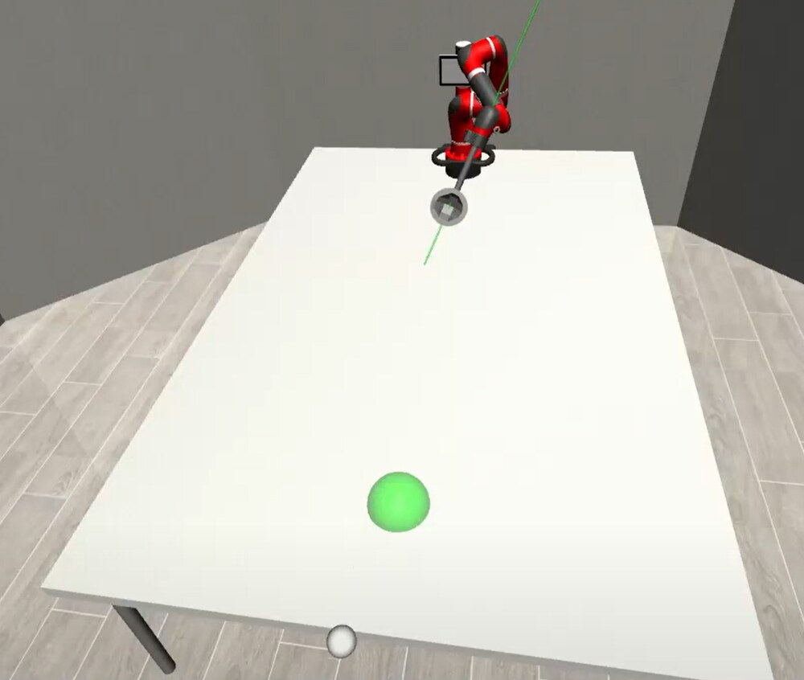
Left: a successful trial, ball settled inside the target. Right: a failed trial, where the ball never settled and rolled straight off the table.
I collected 25 successful demonstrations and stored them, via Robosuite's gather function, in an HDF5 file formatted for Robomimic: joint positions/velocities/angles, end-effector pose, ball position, timestamps, input actions, and reward, all per demo.
Three policies, one question: does more state help?
I trained and evaluated three distinct imitation-learning policies on the same 25 demonstrations, specifically to isolate the effect of how much state information a policy gets:
- BC-Min (Behavioral Cloning): given only end-effector pose and ball position
- BC-Rich (Behavioral Cloning): given the above, plus full joint positions, velocities, and angles
- Diffusion: given the richest state set, including reward and timestamps
The hypothesis: more state (specifically, knowing the arm's actual joint configuration rather than just its end-effector pose) should make a policy more robust to the small physical deviations MuJoCo's contact physics constantly introduces.
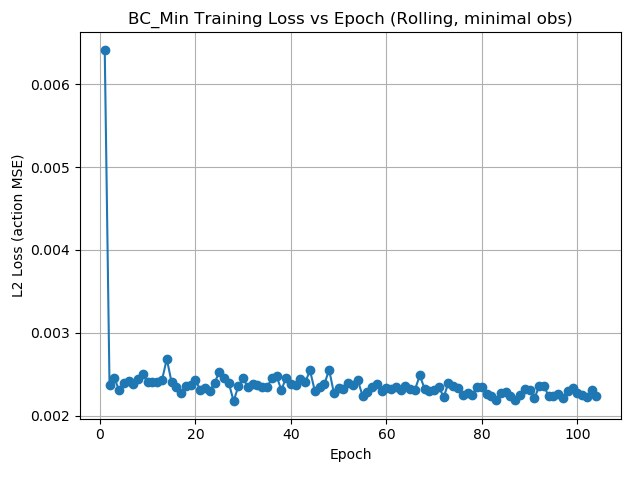
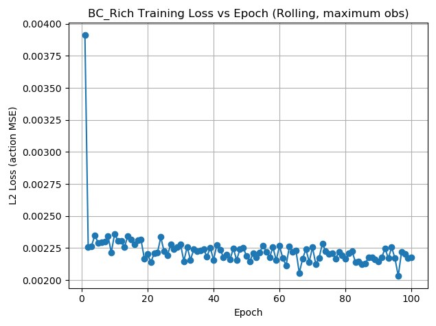
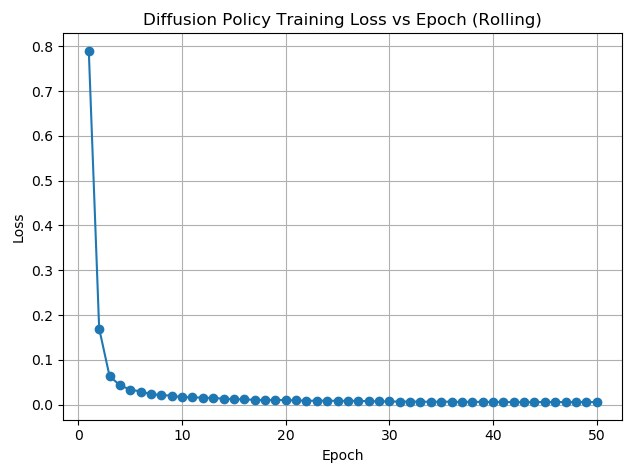
Training loss curves for BC-Min, BC-Rich, and Diffusion. All three converge quickly, but the diffusion policy's loss drops furthest.
The hypothesis held: across 30 evaluation episodes each, BC-Rich beat BC-Min by about 29% on total reward and about 50% on final reward, a large enough gap (about 5× BC-Min's own standard deviation) to be a real effect, not noise. The likely mechanism is compounding error: a behavioral-cloning policy only knows how to react to states it's seen before, and BC-Min, working from end-effector pose alone, has no way to tell when a small physics deviation (say, gravity pulling the arm slightly differently than expected) has knocked it off the trajectory it memorized. BC-Rich, with full joint state, has enough information to stay closer to the demonstrated behavior even after small deviations.
Worth being direct about the honest result here: neither BC model ever achieved a perfect success (a final reward of 1) across all 30 episodes. Compounding error and the small, narrow demonstration set both limited how well either model generalized, even though BC-Rich was clearly the stronger of the two.
The diffusion policy's success metrics never got captured. Its loss curve looks the best of all three (dropping from 0.8 to about 0.16 within the first 5 epochs), but a script issue in how the diffusion policy's training pipeline called its own metrics meant I never got total/final reward numbers to directly compare it against the two BC models on equal footing.
Diffusion also hit a hardware ceiling. Every policy was scheduled for 100 training epochs, but the diffusion model is memory-heavy enough that training was cut off at epoch 50 due to limited space, so even its loss curve should be read knowing it may not have finished converging.
The offline RL data-collection wrapper never worked correctly. It had a bug in how it registered the next observation, which is required for offline RL training, so that direction of the project didn't make it into the final results.
Biggest limitation overall: 25 demonstrations is a small dataset, and all 25 were fairly similar successful rolls, enough to see a real signal between BC-Min and BC-Rich, but not enough to fully separate "the model learned to roll a ball" from "the model memorized 25 near-identical trajectories." The proposed next step in the paper is two much larger demo sets (250 similar, 250 varied) to properly test that distinction.
Team: Rafael Torres, Cougar Seale, and Anikait Gupta, under Professor Junhong Xu.
What came next
This project is what led directly to my next research position. Professor Xu, who took over the Robot Learning stream this semester, reached out to me personally at the end of the term after seeing what I'd built here, specifically the experience of standing up a physics-simulation environment from scratch and getting comfortable inside Robosuite/MuJoCo for SawyerRoll. He had a project that needed exactly that skill set, applied to a different simulator (ManiSkill-HAB instead of Robosuite): building and editing custom environments and tasks for long-horizon robot manipulation.
That became a solo research project in Spring 2026 under the Learning Agents Research Group. Look at the Memory Research tab for more detail!
Memory Research — ManiSkill-HAB
Getting a robot to take commands one at a time, mid-task, without losing 40 seconds or losing track of what it was already doing.
How this started
Professor Junhong Xu reached out directly at the end of Fall 2025, after seeing what I'd built in the second half of the FRI Robot Learning stream, specifically the experience of standing up a physics-simulation environment from scratch and getting comfortable inside Robosuite/MuJoCo for SawyerRoll. He had a project that needed exactly that skill set, applied to a different simulator: building and editing custom environments and tasks inside ManiSkill-HAB (MS-HAB), a benchmark for long-horizon home-robot manipulation. I worked on this solo through Spring 2026.
This project wrapped without a published paper. Professor Xu's time with the lab ended around the close of the semester, and I moved on to a summer internship at General Motors before either of us could take it further. What's documented here is the engineering record instead: weekly progress notes, the working code, and video of the system actually running.
The goal
The project's actual deliverable was a demonstration dataset: trajectory data collected across 15 long-horizon manipulation tasks in MS-HAB's SetTable benchmark, meant to train better downstream robot policies. That's the piece the lab could keep using. Getting there required solving a problem that turned out to be much deeper than expected, and became its own thread of the project: MS-HAB treats long-horizon tasks (setting a table) as chains of smaller learned skills, pick, place, open, close, navigate, each with its own pretrained policy, but the framework only lets you hand it a full task plan up front. Making it interactive instead, so a person could give commands one at a time in natural language and have the environment stay live and remember what had already happened, is what led to the goal-injection work below.
Early ManiSkill exploration: single robot, parallelized environments, and the ReplicaCAD realistic-scene example.
Building the foundation
MS-HAB runs on top of SAPIEN (the same relationship Robosuite has to MuJoCo, which made the transition easier coming off SawyerRoll). Early on, I worked through how MS-HAB structures tasks: subtask types (PickSubtask, PlaceSubtask, NavigateSubtask, OpenSubtask, CloseSubtask), how articulated objects like drawers and fridges are configured, and how a full task plan chains them together.
Building my first custom task (picking up a bowl, opening a drawer, placing the bowl inside) surfaced the first real lesson: the default sample code drove the robot with env.action_space.sample(), literally random actions. Nothing was actually being learned or decided; the robot just twitched randomly and happened to occasionally brush against something. The fix was switching to MS-HAB's pretrained policy checkpoints: a separate trained neural network for each individual skill (pick, place, open, close, navigate), each one already knowing what "correct" looks like for its specific job.
I also spent real time reverse-engineering MS-HAB's coordinate system by trial and error: moving individual objects, re-running, and watching what changed, until I could reliably map which axis controlled depth into the counter, height, and lateral position. That sounds small, but every custom scene I built after this depended on it.
For most commands, a small local LLM (Qwen 2.5, 7B parameters, running on an RTX 4090) works fine as a translator from natural language into a subtask sequence. But for a genuinely complex operation like swapping two objects' positions, which requires staging one object out of the way, moving the second into the first's old spot, then moving the first into the second's old spot. Small models consistently failed. They exhibit what's called "greedy planning": generating the most locally-obvious next step without simulating consequences several steps ahead, so they'd repeatedly try to place an object directly where another object still was, causing a collision.
The fix was a hybrid approach: let the LLM handle simple sequential commands (fast, flexible), and fall back to deterministic hard-coded logic for known complex operations like swaps (reliable, and faster than generating 12 tokens when you can just compute the sequence).
The core problem: policies don't read commands, they read pixels
The central obstacle of the whole project showed up once I tried to make the system truly interactive. The intuitive approach doesn't work: keep one environment running, and just update its internal goal every time a new command comes in. The reason isn't obvious until you dig into how these policies were trained: they're observation-driven, not instruction-driven. A policy never sees your parsed command dictionary like {"type": "pick", "obj_id": "bowl-3"}. It only ever sees numerical observations, and critically, the target object's identity is baked into those observations visually, as a highlighted region in a rendered depth image, not as an editable coordinate sitting in a state vector.
That meant the environment being initialized with "pick bowl-0" would keep showing the policy bowl-0 as the goal in every single observation, no matter what command a user typed next. The policy would just keep reaching for bowl-0. I tested and ruled out bypassing this with a lower-level "primitive step" function that skips the normal observation pipeline entirely; it does return raw camera frames, but with no goal highlighting at all, which just confuses a policy that's never seen an unhighlighted scene.
Early custom-task attempts: the bowl/drawer test, the switch to the apple task, and the first successful run with policy checkpoints instead of random actions.
The breakthrough: dynamic goal injection
The only real options were: recreate the whole environment for every single command (correct, but a ~40-second physics-replay delay each time), or find a way to change the goal inside a live environment without recreating it. I found the second path. MS-HAB stores each subtask's target as an entry in an internal list (subtask_objs[]), and I discovered that directly mutating an existing entry doesn't work. The object wrapper's position is cached at creation and never updates. But replacing the entire wrapper with a freshly constructed one (via Actor.create_from_entities(), pointed at the new target) does work, and the environment picks it up immediately.
Dynamic goal injection demo: switching the robot's target from bowl-0 to bowl-3 live, with no environment recreation.
The result: per-command overhead dropped from about 40 seconds down to under 1 second, with identical policy behavior. That single technique is what actually made an interactive, on-the-fly command loop feasible at all.
Debugging deeper: two lists, not one
Getting simple pick commands working with this technique was one thing; getting the full pipeline (including opening drawers and fridges) working was another. A costly early mistake: I was updating subtask_objs[], assuming it controlled everything about the goal, including the green "target" indicator MS-HAB renders in its visualization. It doesn't. There's a separate list, subtask_goals[], that the rendering and observation pipeline actually reads for exactly this purpose. Conflating the two cost real debugging time before the distinction became clear.
Even after fixing that, the open-drawer subtask remained stubborn: the robot would navigate to the correct drawer, the goal indicator would appear on the correct handle, and the policy would still output near-zero force, effectively doing nothing. The eventual explanation: opening a drawer depends on several pieces of internal state staying mutually consistent (the goal position, the articulation reference, the subtask pointer, and a cached table of handle world-positions computed once at environment start). My injection was setting most of these correctly, but leaving that cached handle-position table stale, which fed the policy a set of observations that quietly contradicted each other in a way it had never seen during training, and it responded by doing nothing at all rather than something wrong.
The green goal-indicator appearing correctly on a drawer handle, and separately, footage from before the fix where it doesn't appear at all.
The architecture that came out of this, and the part I'd confidently defend to anyone asking whether the overall approach was sound, is a clean two-loop structure: an outer loop that walks through the LLM-parsed sequence of primitive subtasks and injects the correct goal state for each one, and an inner loop that repeatedly queries the matching pretrained policy and steps physics until that specific subtask's success condition fires. It's a clean separation of "what should the robot be trying to do right now" from "given what it currently sees, what should it actually do." It's the same two-loop shape you'd sketch on a whiteboard for this class of problem. The remaining issues were state-consistency bugs within that architecture, not flaws in the architecture itself.
A finding about policy generalization
One more result worth calling out on its own, since it's a real finding and not just a bug: the "place" policy reliably succeeds at the dining-table location it was trained on, but fails in scenes that don't have that table at all. In the deployment scene used for the demonstration dataset, the only valid placement target is a fixed drawer location, and the policy's performance drop there is direct evidence of how narrowly it generalizes. It learned a mapping tied to a specific region of 3D space during training, not a general "put it down here" capability, so a goal position outside that region is effectively unfamiliar territory even though the task looks the same to a person watching.
Building the demonstration pipeline
MS-HAB ships with a built-in trajectory-saving option (save_trajectory=True in mshab.evaluate), which would have made this easy if it worked. It didn't: it fails on SequentialTaskEnv with a missing num_saved_trajectories attribute, a bug in the framework itself rather than anything in my setup. With no working built-in tool, I built a custom collection pipeline from the ground up.
I designed 15 distinct long-horizon task variants for the SetTable benchmark, from a single object into a single drawer up through multi-object sequences and dual-container tasks involving both the fridge and the drawer, chosen to stress different parts of the system (navigation, multi-object state tracking, container proximity) instead of repeating the same easy case fifteen times. The pipeline itself runs in three stages: individual Python scripts generate the JSON task plan for each scenario and write it into MS-HAB's rearrange directory; a central collection script drives the simulation and dispatches to the correct one of 11 pretrained policy checkpoints (SAC for pick/place, PPO for navigate/open/close) at every step; completed episodes are saved as HDF5 alongside a matching rendered video.
Per episode, the HDF5 file holds depth images, full joint positions and velocities, end-effector pose, base velocity, grasp state, the pose of every object and articulation in the scene including drawer/fridge joint angles, actions, rewards, and both overall and per-subtask success flags, organized into one timestamped folder per run.
Getting the observation structure right after a goal injection took its own debugging: calling the environment's observation getter directly right after replacing a wrapper returns malformed keys. A single zero-action step in between is what actually refreshes the observation into a correctly structured one.
Memory-heavy tasks had to run with a single parallel environment to avoid running out of GPU memory, while lighter tasks scaled up to nine in parallel; overnight collection runs went unattended through tmux. I also found and fixed a policy-dispatch bug where the system was reading a placeholder pointer instead of the actual subtask type to decide which policy to run, which silently could have driven the wrong skill for a given step.
Full interactive session running the two-loop architecture, sequential natural-language commands executed live, and/or a data-collection run across the 15 task variants.
Tech stack
Connect 4 — Embedded Systems
A full hardware/software system built from scratch on a TI microcontroller: graphics, sampled sound, interrupts, and a bilingual UI, working together in real time.
The course
ECE 319K, Introduction to Embedded Systems, is UT Austin's foundational embedded systems course, built around Jonathan Valvano's curriculum and the TI MSPM0G3507 LaunchPad. Each lab through the semester adds a layer, GPIO, ADC, DAC, interrupts, timers, LCD graphics, sampled sound, until the final lab asks you to combine all of it into one working system you design yourself.
The assignment: Lab 9
Lab 9 is that capstone, done in pairs. You propose your own project (or default to a Space Invaders clone), and a TA has to approve the proposal before you can start. Whatever you build, every project has to meet the same base requirements:
Must actually affect gameplay, not just exist.
Sampled at a rate satisfying the Nyquist theorem, playing a real role in the game.
Moving on the LCD in response to user input or time.
Generated via the DAC, sampled or synthesized.
Used appropriately, not just for show.
Every displayed string in at least two languages, tied to an ABET criterion about designing with global/cultural awareness.
Development is deliberately modular: five separate test programs (main1 through main5), each isolating one subsystem, language strings, sprites, switches/LEDs, sound, then full integration, before anything gets combined. Grading is a live checkout with a TA (code walkthrough plus a working demo), worth 6% of the course grade on its own.
Our project: Connect Four
Working with Jason Kuchler, we built a full two-player Connect Four game on the 7×6 grid. A slide-pot moves a cursor left and right across the top of the board to select a column; one button drops a disc into the selected column, a second pauses or resumes the game. Discs fall to the lowest open slot, and the game watches for four in a row, vertically, horizontally, or diagonally, ending in a win or a draw if the board fills first.
Sampled at 30 Hz via a periodic SysTick interrupt, satisfying Nyquist for smooth motion. The ADC reading converts directly into a column index across the 7 columns.
Software-debounced polling in the main loop, checked against the previous switch state, updates the board and triggers the drop.
Switches between English and Spanish on the pre-game language-select screen.
The cursor, red discs, and yellow discs, discs animate downward when dropped, cursor tracks the slide-pot in real time.
A drop sound and a win sound, sampled audio from .wav files played through the DAC on a fixed 11,025 Hz interrupt.
Full bilingual support, chosen at startup, covering every menu and game-over message.
Most of the base requirements map cleanly onto something the game actually needed, the slide-pot's Nyquist-rate sampling makes the cursor movement smooth rather than just technically compliant, and the two interrupt ISRs are both doing real, distinct jobs: TIMG12_IRQHandler at 30 Hz samples the slide-pot and updates the cursor column, and a genuine SysTick_Handler streams sampled audio to the DAC for the drop and win sounds. Disc drops themselves ended up handled by software-debounced polling in the main loop rather than a button-edge interrupt as originally proposed, a small deviation from the plan, but the finished system still satisfies the requirement with two real, independent interrupts doing meaningful work.
Full 4-minute system walkthrough: gameplay, cursor control, disc drops, sound, and the win/draw conditions in action.
How the win detection actually works
Every disc drop calls CheckWinTie() with the just-placed piece's row and column. Rather than scanning the whole board, it only checks the four lines that could possibly have just become a win, run through the dropped disc: the full row, the full column, and both diagonals through that cell, each as a running count that resets whenever it hits an empty or opposing-color slot. If none of the four connect, it separately checks whether the top row is completely full to call a tie. It's a small function, but it's doing the actual game logic that makes this a real Connect Four implementation rather than just a board renderer.
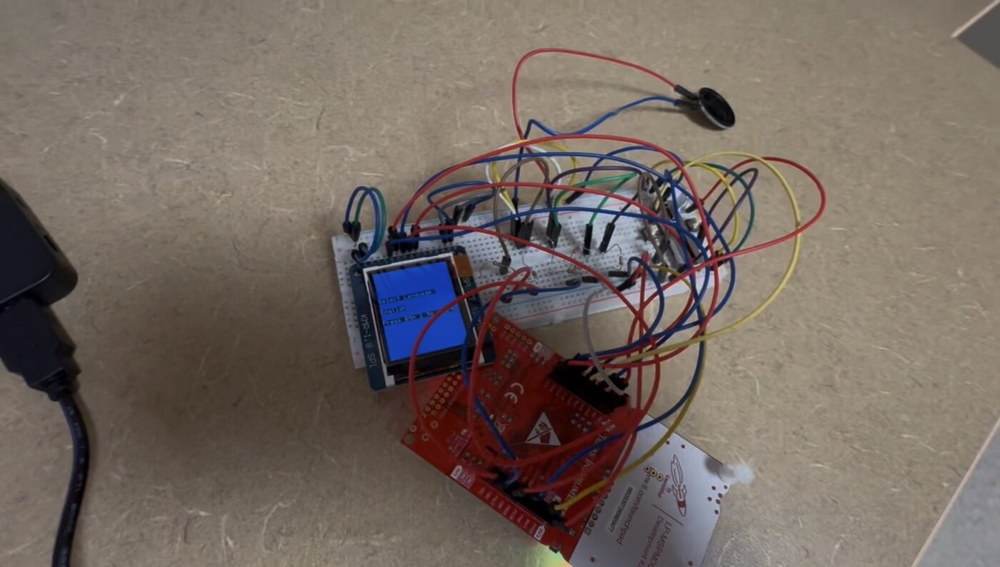
The full setup: MSPM0G3507 LaunchPad, breadboard, ST7735R LCD (showing the language-select screen), and speaker.
Team: Jason Kuchler and Rafael Torres.
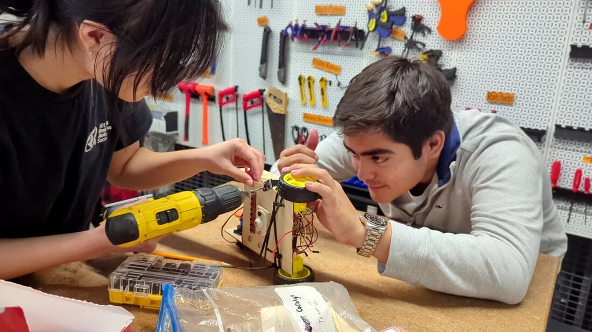
Robotathon 2024 — RasterChef
A ping-pong-ball collection robot, and a rubber-band roller mechanism nobody else on the field had thought to try.
The challenge
Robotathon is IEEE Robotics and Automation Society's annual UT Austin competition. Teams are handed a robotics starter kit (ESP32, motors, a color sensor, a line-sensor array, distance sensors) and about two months to design and build a fully custom robot from scratch.
The 2024 game centered on collecting and transporting ping-pong balls. Robots earned a ball by completing a color-matching challenge autonomously, then had to physically pick the ball up themselves (no hand-placing allowed) before navigating a line-following path and a "coop" bridge to a raised drop-off zone.
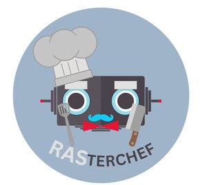
Robotathon 2024's theme was RasterChef, a cooking competition motif. We leaned all the way in: our team name was a play on Gordon Ramsay, and we 3D-printed a small mouse to sit on the chassis as our mascot, Remy from Ratatouille. Hence "Ratzky."
My role was a mix of mechanical and electrical: chassis cutting and assembly, wiring, and mechanism design, while teammates led the code. This page focuses on the part I owned most directly: the intake mechanism that ended up defining the whole robot's identity.
The mechanism
Most teams solved ball pickup the same way: a bulldozer-style plow that scoops the ball against a wall, lifts, and tilts to let gravity roll it into a hopper. It works, but it's mechanically simple and it's what everyone converges on under time pressure.
We built something different: a rotating roller intake, directly inspired by a tennis ball hopper.
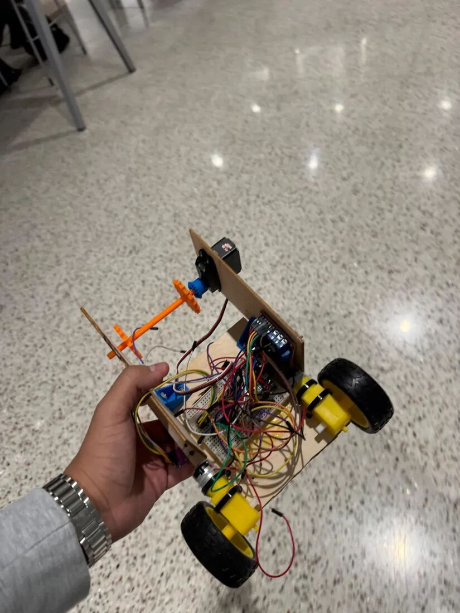
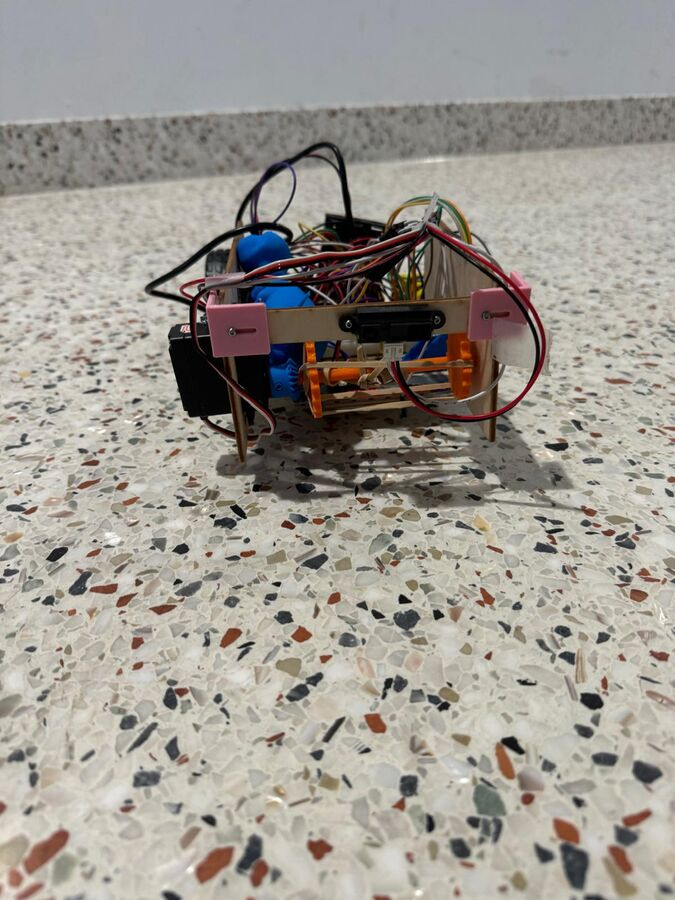
A servo-driven shaft sits at the front of the chassis, wrapped with rubber bands stretched in an X pattern. Spaced correctly, the bands leave a gap between each "tooth" as the shaft spins.
Spinning forward, that gap catches the ping-pong ball on contact and rolls it up and into the chassis, the same catch-and-carry action as a tennis ball hopper, just scaled down and 3D-printed. Reversing the servo spins the shaft backward and releases the ball.
Most other teams used a bulldozer-style design instead: scoop the ball against a wall, lift the whole mechanism, and tilt it so gravity rolls the ball into a hopper. Ours had no lift or tilt at all, just directional rolling.
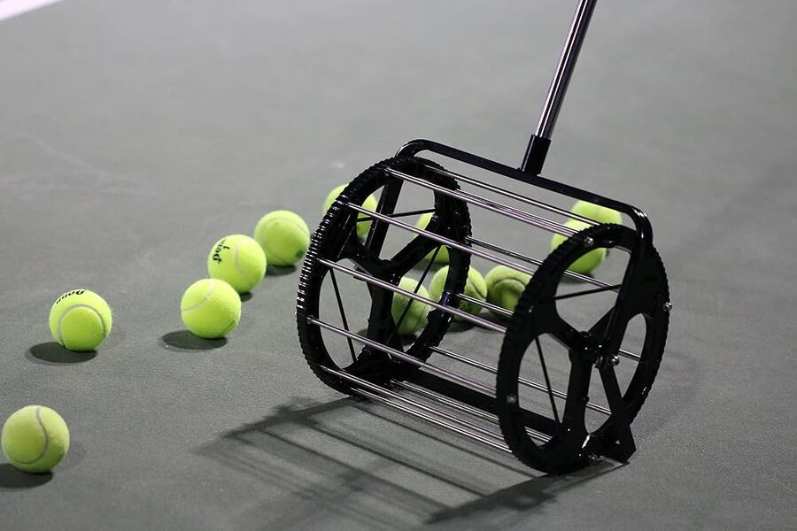
A tennis ball hopper: a cage roller that catches balls in gaps between metal ribs as it rolls forward. We adapted the same principle at a much smaller scale, in 3D-printed plastic and rubber bands instead of steel.
"The best mechanical design is awarded for the team that had the most robust and effective mechanical design for the competition. We the judges decided to give the award to the team that had a very creative design on how to pick up the ping pong ball — it was very effective and fairly quick at picking things up, a unique intake rubber band mechanism. Best mechanical design goes to Gordon Ratzky."
The official award criteria: "Most interesting functional implementation such as chassis shape, novel solution to the mechanical challenge, etc." This is exactly the bar the roller mechanism was built to clear.
What we learned
Getting the roller to work reliably took real iteration, not a one-shot calculation:
Running the intake too fast made the ball bounce off the rubber bands instead of getting caught. We had to slow the servo down and drive collection deliberately rather than for max speed.
The gap between rubber bands had to be tuned by trial and error: too tight and the ball wouldn't enter, too loose and it wouldn't grip. No formula for it; just repeated testing.
The build
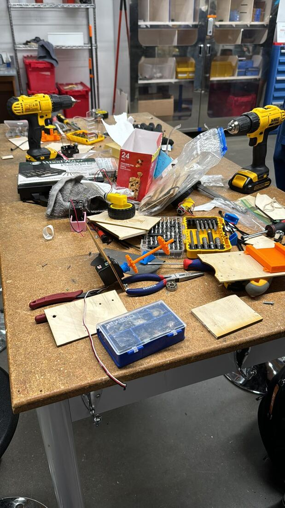
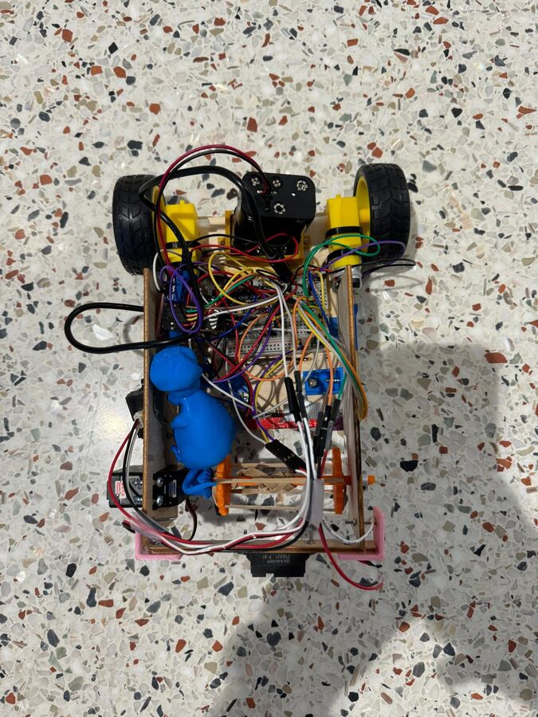
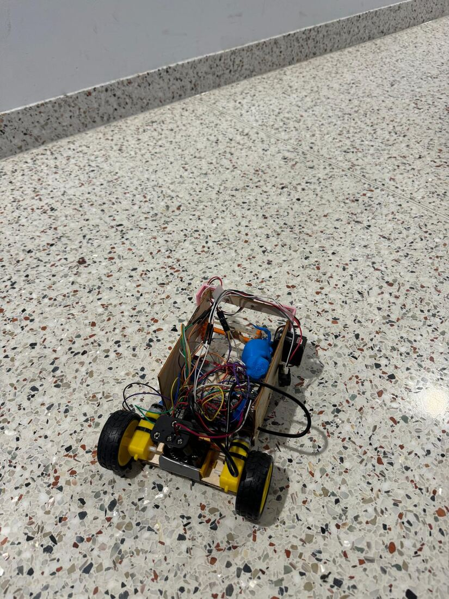
Laser-cut plywood, twin DC drive motors, a breadboard-mounted motor driver, and a Sharp IR sensor on custom 3D-printed brackets.
Anatomy of the robot
A closer look at what's actually on the chassis, labeled from the eagle-view shot, useful if you don't have a robotics background and are wondering what half of this wiring even does.
Best-guess labeling from the photo. Flag anything I got wrong and I'll fix it.
The brain of the robot. Runs the line-following, color-matching, and obstacle-avoidance logic, and handles the Bluetooth pairing with the PS4 controller (built into the ESP32 itself, no separate module needed).
Sits between the ESP32 and the two drive motors. The ESP32's logic-level signals aren't strong enough to actually turn a motor. This converts them into real current.
Powers the autonomous Color Sensor Challenge: reads and matches colors so the robot can earn a ping-pong ball before going to collect it.
Mounted underneath the chassis, so it's not visible in this shot. Reads the line beneath the robot for the autonomous Line Challenge.
Spins the rubber-band roller intake: forward to catch a ball, reversed to release it. The mechanism the Best Mechanical Design award was actually for.
Mounted at the rear, used for the Wall Challenge: detects obstacles so the robot can back off and steer around them on its own.
Two of them, differential-driven. Handle everything from line-following to manual driving to crossing the coop bridge.
Team & recognition
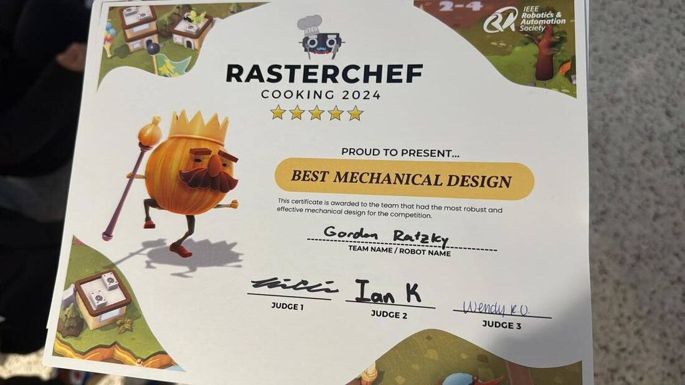
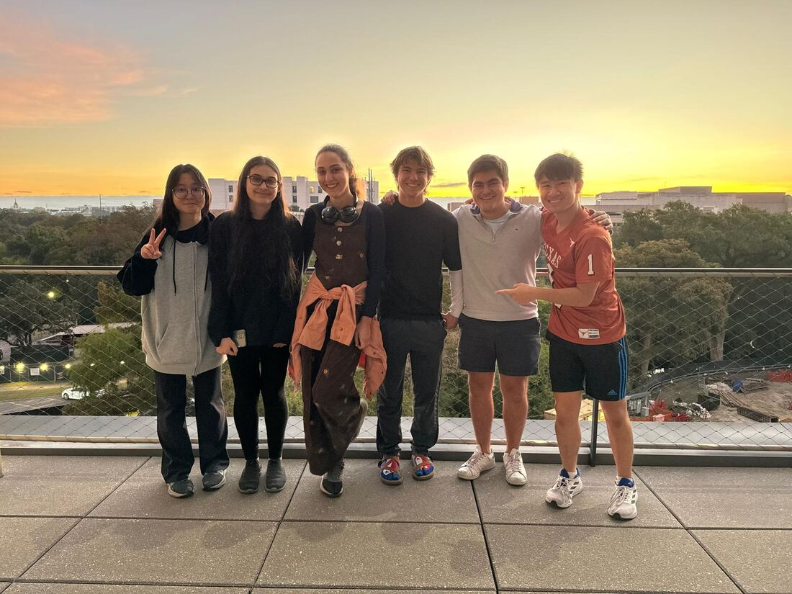
It's common for teams to pull an all-nighter on the last day of Robotathon. Ours started building at 5PM Friday and worked straight through to Saturday's competition. Watching the sunrise together after finishing the robot is one of those team-bonding moments that sticks with you longer than the award does.
Watch it live
Full competition livestream, with our team's run and the award announcement:
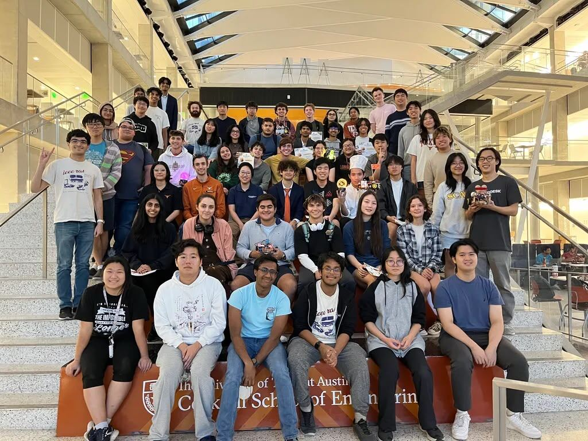
The full Robotathon 2024 cohort, end of competition day.
About — Rafael Torres
Where this started, and where it's going.
Hi there! My name is Rafa, and I'm an Electrical & Computer Engineering student at UT Austin with a minor in Robotics. I grew up in Lima, Peru, and my first real engineering discovery was a LEGO Mindstorms EV3 kit: building it, breaking it, rebuilding it into things it wasn't supposed to be. It taught me that circuits and code could make something move.
A few years later, my bedroom fan kept breaking at night, so I prototyped a replacement that could adjust its own speed based on the room's temperature using a sensor. Small project, but it was the first time I really felt like I was building something because I needed it, not just because it was cool.
What changed
The bigger shift came with Clouds-for-Change, a project that brought fog water catchers to 150 people in Peru who didn't have reliable water before. That was when it really landed for me: engineering has the power to solve real problems people actually have. That's what's kept pulling me toward it since then. The chance to build the skills to create that kind of change, to make a meaningful impact, not just for the sake of building things.
Beyond engineering
Outside of engineering, I'm a sucker for music. I've been playing instruments since I was a kid. Community work has mattered to me for even longer than engineering has: I helped rebuild houses for earthquake survivors in Chincha, Peru, before Clouds-for-Change came along. These days, that same instinct shows up as Engagement Chair for YNG Austin, where I help shape new experiences and events for our members.
What's next
Right now I'm putting that into practice with ASCEND Texas, where I'm helping build autonomy for an electric emergency response aircraft for GoAERO, NASA's autonomy-focused emergency response prize competition. Longer term, I envision building robots that support Peru's primary industries, work that's often dangerous, physically demanding, and repetitive, so people can move into safer, higher-value roles instead of carrying that risk themselves.
Between my academics, research, and the years I've spent in robotics orgs at UT, I've realized what I actually need next is a deeper technical foundation. So I've decided to pursue a Robotics Engineering Master's after I graduate from UT in May 2028.
At the end of the day, what keeps me in robotics isn't the tech itself. It's what it lets me build for people who need it. That's the only thing I've ever been sure I want to keep doing.
You can learn more about my work in my resume and projects below!
Contact
Reach out directly, or grab my resume below.
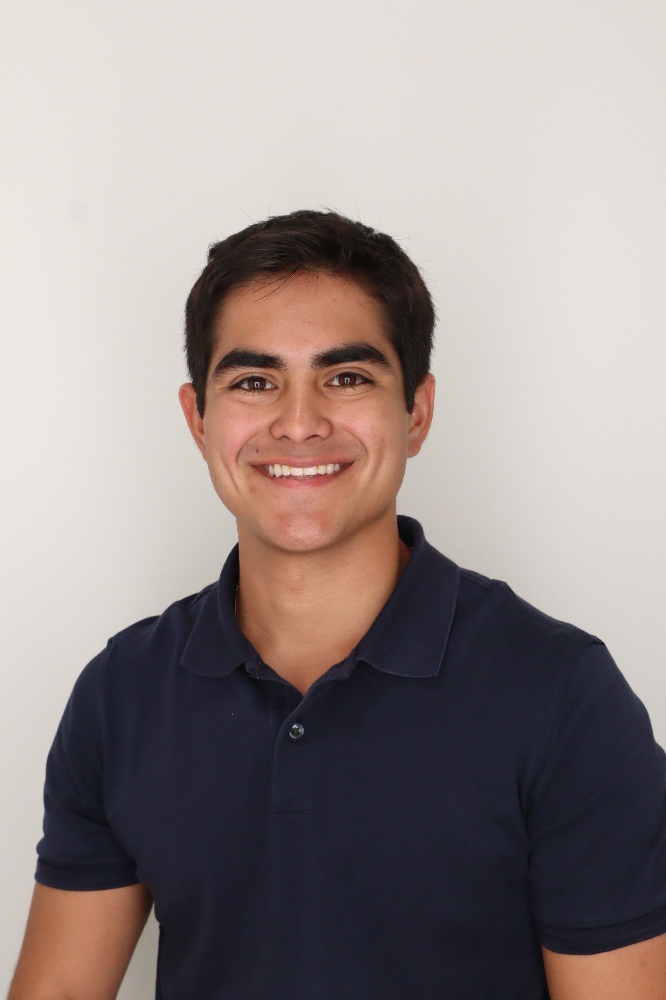